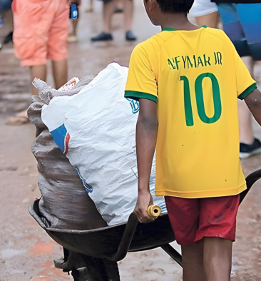

O que é 'trabalho digno'?
Descubra os pilares que sustentam a nossa causa e por que ela é tão importante.
Desafios e Soluções
Trabalho decente significa garantir que todos tenham a oportunidade de conseguir um emprego produtivo, com uma renda justa e segurança no local de trabalho.
Empregos e Juventude
O desemprego juvenil ainda é três vezes maior que a taxa de adultos. Nossa missão é preparar a próxima geração para o mercado de trabalho.
Fim do Trabalho Infantil

O número de crianças em trabalho caiu para 138 milhões em 2024. A luta continua para erradicar essa prática de vez.
O Desafio da Informalidade
Muitos trabalhadores ainda estão em empregos informais, sem proteção social ou direitos. Nossas propostas buscam a formalização para garantir a dignidade de todos.